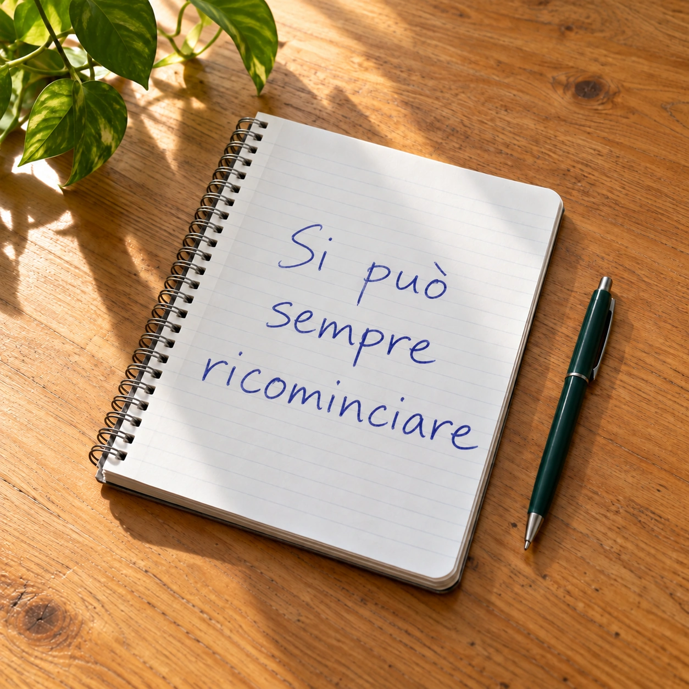

Кому подойдут занятия со мной
Переезжаете или живёте
в Италии
Планируете переезд, работу или учёбу в Италии — или уже живёте там. Итальянский нужен для повседневного общения: понимать людей, поддерживать разговор и увереннее чувствовать себя в новой среде.
Учите для себя
Вам нравятся итальянское кино, музыка и книги, и хочется понимать их в оригинале. Или вы мечтаете о поездке в Италию, где сможете познакомиться с местными и поговорить по-итальянски.
Учили и до сих пор
не говорите
Вы знаете слова и правила, но в разговоре трудно ими пользоваться. Боитесь перепутать слово или выбрать не тот глагол, поэтому стесняетесь заговорить. Хочется больше практики и уверенности в общении.

Возвращаетесь
к итальянскому
Раньше учили итальянский и хотите вернуться после перерыва. Многое уже забылось. Неясно, с чего начать и придётся ли учить всё заново. Беспокоит, что в этот раз тоже не получится дойти до результата.